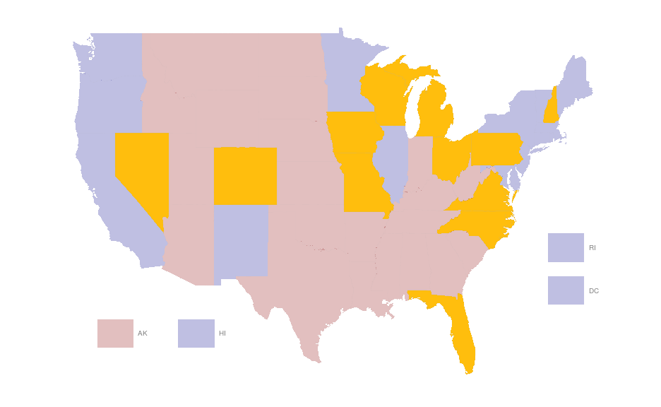
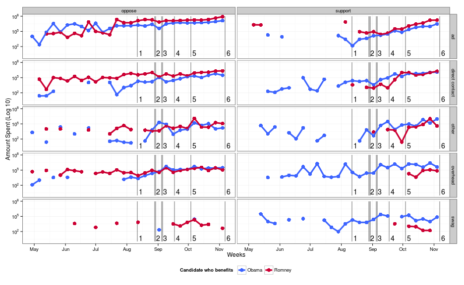
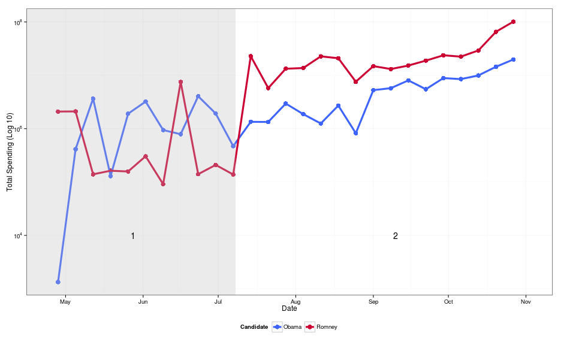
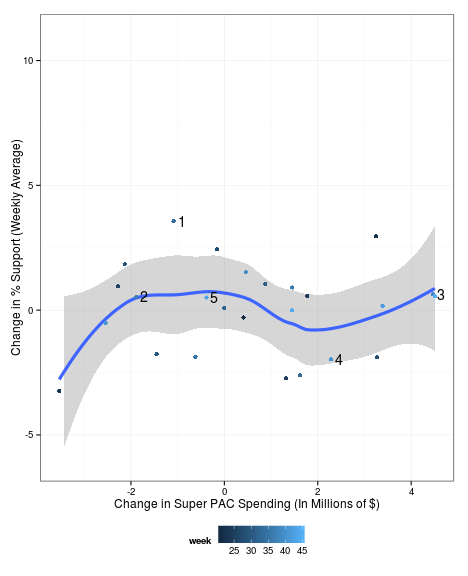
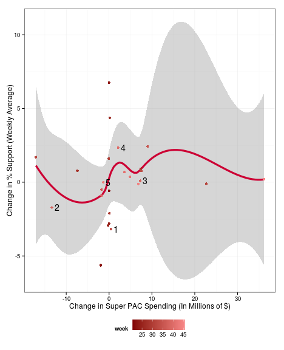
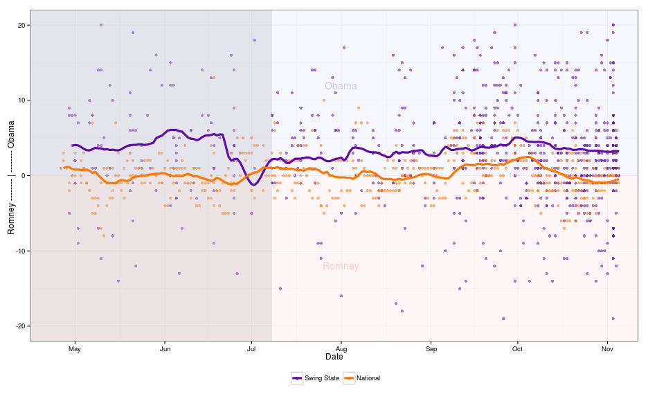

A Look at the 2012 Election
Eric Hare & Andee Kaplan
Dec. 6, 2012
Story of Our Lives...
Motivation
- 2010 Supreme Court Ruling: Citizens United
- PAC - Any organization in the United States that campaigns for or against a candidate, ballot initiatives or legislation
- Super PACs - A PAC to which corporations, unions, and other organizations can donate freely
- How did this impact the 2012 election?
Data
- Independent Expenditures (FEC)
- National/State Polling (Nationalpolls.com)
Spending Data
tail(spend.data, n = 2)
## can_id can_nam spe_id spe_nam ele_typ
## 110107 obama, barack c90013863 working for michigan g
## 110108 obama, barack c90013863 working for michigan g
## can_off_sta can_off_dis can_off can_par_aff exp_amo exp_dat
## 110107 0 p 80000 2012-10-20
## 110108 0 p 3060 2012-10-20
## agg_amo sup_opp pur
## 110107 109012 support canvass outreach - began 10/20/2012
## 110108 109012 support literature distributed via canvass - 10/22/2012
## pay file_num amn_ind tra_id ima_num rec_dat
## 110107 field strategies 822630 n f57.000001 1.296e+10 2012-10-20
## 110108 mack crounse group 822630 n f57.000002 1.296e+10 2012-10-20
## prev_file_num bucket bucket2 oflag beneful_can
## 110107 NA canvass direct contact 1 obama
## 110108 NA canvass direct contact 1 obama
Polling Data
head(polls.data, n = 3)
## Pollster State Date Obama Romney isNational
## 1 Politico/GWU/Battleground National 2012-11-05 47 47 TRUE
## 2 Gravis Marketing Ohio 2012-11-05 49 48 FALSE
## 3 Gravis Marketing Florida 2012-11-05 49 49 FALSE
## Obama.Romney
## 1 0
## 2 1
## 3 0
Cleanup
Bucket List
- Ads - Advertisement spending, including television, radio, and online
- Direct Contact - Direct voter contact, such as canvassing
- Overhead - Expenditures related to the ongoing cost of running a Super PAC, including salary, rent, consultants, fundraising, and travel
- Swag - Clothing, signs, and other promotional material
- Other - All expenses that do not fit into the above categories
Spending by Independent Organization

Map of Swing States

Swing State Trends

Types of Spending by Week

Spending by Week

Change in Polling over Spending
 
Effect of Spending on Polls

Conclusions/Future Work
- Effect of Super PACs difficult to measure
- Romney Super PACs spent more than Obama Super PACs
- Obama's polling stronger in swing states
- [Future Work] Candidate spending
- [Future Work] Fully explore usability of expense purpose data
Questions?
Eric Hare, erichare@iastate.edu
Andee Kaplan, ajkaplan@iastate.edu
Acknowledgements
Prof. Dianne Cook
Prof. Heike Hofmann
Susan VanderPlas